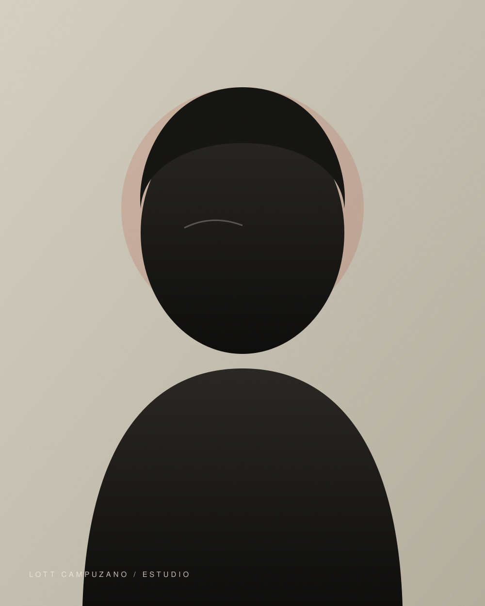

Autor · Galería CampuzanoIxtapan de la Sal, México
Lott Campuzano
Desarrollador frontend, fotógrafo y artista visual

Retrato de estudioIxtapan de la Sal
Declaración
Soy Lott Campuzano. Trabajo entre el desarrollo frontend, la
fotografía y el dibujo. Me interesa lo que queda cuando una
imagen se despoja de lo anecdótico: una tensión, un borde, una
sombra que insiste.
Dibujar es sostener la duda el tiempo suficiente para que
aparezca una forma.